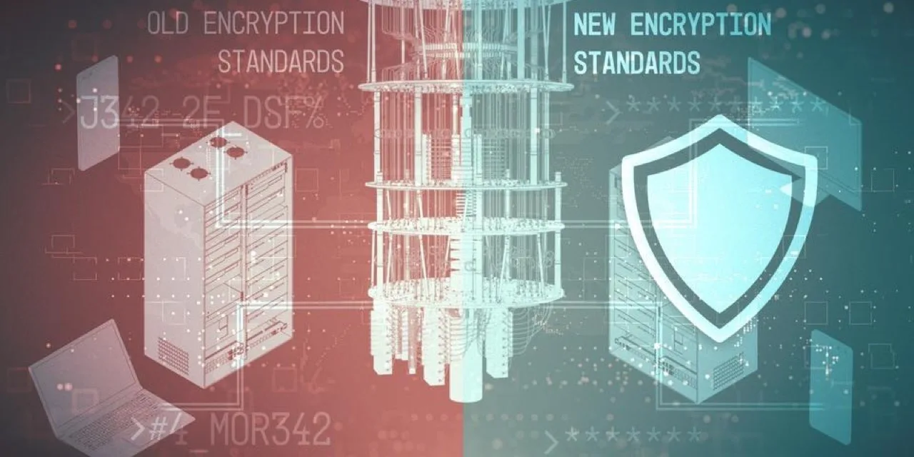

실스크 LAES와 아르킷 퀀텀 ARQQ를 볼 때 가장 먼저 지워야 할 오해가 있습니다. 두 회사는 아이온큐나 리게티처럼 양자컴퓨터 자체를 만드는 회사가 아닙니다. 두 회사가 파는 것은 양자컴퓨터가 충분히 강해졌을 때 기존 암호 체계가 흔들릴 수 있다는 위험, 그리고 그 위험에 대비하려는 정부·통신·금융·산업 고객의 보안 전환 예산입니다.
그래서 이 글의 질문은 “두 회사 중 누가 더 뛰어난 양자컴퓨터를 갖고 있습니까?”가 아닙니다. 더 정확한 질문은 “양자컴퓨터 시대가 오기 전에 고객이 실제로 돈을 내고 바꿔야 하는 보안 계층은 어디이며, LAES와 ARQQ는 그 예산을 어떤 제품으로 가져오려 합니까?”입니다. LAES는 보안 반도체와 장치 인증 쪽으로, ARQQ는 소프트웨어 기반 암호화와 키 합의 쪽으로 답을 내놓고 있습니다.
투자자 입장에서는 이 차이가 매우 중요합니다. LAES는 칩 인증, 생산 준비, 고객 평가 키트, 산업용 장치 채택이 핵심입니다. ARQQ는 계약 수, 반복 소프트웨어 매출, 통신사·국방·금융 고객 확장이 핵심입니다. 두 회사 모두 양자보안 테마를 타지만, 검증해야 할 숫자는 완전히 다릅니다.
양자컴퓨팅과의 연결은 암호 전환에서 시작됩니다

양자컴퓨팅이 보안 기업과 연결되는 이유는 기존 공개키 암호 때문입니다. 대형 양자컴퓨터가 충분히 발전하면 RSA나 타원곡선 암호처럼 오늘날 널리 쓰이는 방식이 취약해질 수 있습니다. 아직 그 시점이 오늘 당장 온 것은 아니지만, 장기 수명 장비와 민감 데이터는 미리 바꿔야 합니다. 자동차, 전력망, 통신 장비, 위성, 국방 시스템처럼 한 번 설치하면 10년 이상 쓰는 장비는 특히 그렇습니다.
NIST가 2024년에 첫 포스트 양자 암호 표준 3개를 확정한 일은 이 시장의 출발 신호에 가깝습니다. 표준이 있어야 정부와 대기업이 조달 기준을 만들 수 있고, 보안 벤더가 제품을 인증받을 수 있으며, 고객은 기존 시스템을 언제 어떻게 바꿀지 계획할 수 있습니다. LAES와 ARQQ의 기회도 바로 여기서 나옵니다.
다만 포스트 양자 보안은 멋진 발표보다 훨씬 지루한 사업입니다. 고객은 기존 장비를 모두 한 번에 갈아엎지 않습니다. 먼저 취약한 암호 자산을 찾고, 어떤 통신 구간이 위험한지 확인하고, 칩이나 소프트웨어를 시험하고, 인증과 조달 절차를 거친 뒤 단계적으로 적용합니다. LAES와 ARQQ의 매출이 커지려면 이 긴 전환 과정에서 “테마”가 아니라 “필수 예산”으로 들어가야 합니다.
LAES는 포스트 양자 보안 칩과 장치 신뢰를 파는 회사입니다
관련 영상
미국 양자컴퓨팅 테마에서 ARQQ와 LAES를 함께 설명하는 한국어 롱폼 영상
LAES의 본업은 보안 반도체입니다. 회사가 내세우는 핵심 제품은 Quantum Shield QS7001과 QVault TPM입니다. QS7001은 연결 장치 안에 들어가는 보안 MCU에 가깝고, 하드웨어 루트 오브 트러스트, 보안 키 저장, 암호 가속, 장치 인증을 silicon 단계에서 처리하려 합니다. QVault TPM은 서버, 산업용 PC, 통신 장비, 자동차, 스마트미터 같은 장비에 신뢰 앵커를 제공하는 TPM 계층으로 봐야 합니다.
LAES가 양자컴퓨팅과 연결되는 방식은 “양자 알고리즘을 실행하는 칩”이 아니라 “양자 이후에도 장치 신원을 믿을 수 있게 하는 칩”입니다. 회사는 QS7001과 QVault TPM이 Kyber와 Dilithium 같은 포스트 양자 암호 알고리즘을 지원하는 방향으로 설계됐다고 설명합니다. 또한 Common Criteria EAL5+, FIPS 140-3, TCG TPM 인증 흐름을 강조합니다. 이 인증들이 중요한 이유는 고객이 보안칩을 조달할 때 기능 설명만으로는 부족하기 때문입니다.
SEALSQ의 2026년 1분기 발표에서 확인할 숫자는 매출 약 410만 달러, 전년 동기 대비 200% 이상 성장, 현금과 단기투자자산 5억2,500만 달러 이상입니다. 회사는 2026년 매출이 전년 대비 50%에서 100% 성장할 수 있다고 안내했고, 2026년부터 2029년까지 잠재 파이프라인 2억 달러 이상, 그중 6,000만 달러 이상이 QS7001과 QVault TPM 프로그램에 연결된다고 설명했습니다.
이 숫자만 보면 LAES는 흥미롭습니다. 매출 기반이 작지만 성장률이 크고, 현금도 매우 큽니다. 그러나 주주가 조심해야 할 부분도 분명합니다. Q1 매출에는 기존 Vault-IC 보안 요소, IC'ALPS 연결 효과, 스마트미터와 PKI 반복 매출이 함께 들어 있습니다. 즉 LAES의 현재 매출은 이미 상용화된 기존 보안 사업과 앞으로 열릴 포스트 양자 제품 기대가 섞여 있습니다. 투자자는 QS7001과 QVault TPM의 “첫 생산 매출”이 실제로 언제, 얼마만큼 잡히는지 따로 확인해야 합니다.
LAES를 평가할 때 가장 중요한 사건은 인증과 고객 평가입니다. 회사는 QS7001 평가 키트가 2025년 11월부터 제공됐고, 여러 잠재 고객이 QS7001과 SDK를 평가 중이라고 설명했습니다. Lattice Semiconductor와의 TPM-FPGA 구조, Parrot 드론과의 포스트 양자 보안 협력, 스마트미터와 에너지 네트워크용 PKI는 모두 방향은 좋습니다. 그러나 방향이 곧 매출은 아닙니다. 여기서 투자자는 평가 키트, 인증 진행, 고객 설계 채택, 양산 주문, 반복 인증 서비스 매출이 순서대로 이어지는지 봐야 합니다.
ARQQ는 양자안전 암호화 소프트웨어와 키 합의 플랫폼입니다
ARQQ의 사업은 LAES와 결이 다릅니다. Arqit은 반도체를 파는 회사가 아니라 양자안전 암호화 소프트웨어를 파는 회사입니다. 핵심은 기존 네트워크와 클라우드, 장치 사이에서 안전한 암호 키를 만들고 자주 바꾸며, 고객이 포스트 양자 보안으로 넘어갈 수 있도록 돕는 것입니다. 회사는 SKA-Platform, NetworkSecure, Encryption Intelligence 같은 이름으로 제품을 설명합니다.
Encryption Intelligence는 고객의 암호 자산을 먼저 파악하는 제품입니다. 기업은 자기 시스템 안에 어떤 암호 알고리즘이 어디에 박혀 있는지 모르는 경우가 많습니다. 포스트 양자 전환은 새 보안 제품을 사는 것보다 먼저, 어디가 취약한지 찾는 일에서 시작됩니다. ARQQ가 이 제품을 앞세우는 이유도 바로 이 때문입니다. 고객이 위험 지도를 만들면 그다음 NetworkSecure 같은 보호 제품을 붙일 여지가 생깁니다.
NetworkSecure와 SKA-Platform은 데이터 이동 구간을 보호하는 쪽에 가깝습니다. 회사는 VPN, 데이터센터 연결, 통신사 백홀, 국방 네트워크, 클라우드 워크로드를 사례로 듭니다. Arqit의 2026 회계연도 상반기 발표에 따르면 2026년 3월 31일 기준 상반기 매출은 62만3,000달러였습니다. 전년 동기 6만7,000달러, 2025 회계연도 하반기 46만3,000달러보다 늘었지만, 아직 절대 규모는 작습니다.
ARQQ가 의미 있는 지점은 계약 수와 적용 분야입니다. 회사는 2026 회계연도 상반기 매출이 11개 계약에서 발생했다고 설명했습니다. 2025 회계연도 전체 7개 계약보다 계약 수가 늘어난 셈입니다. 또한 RAD와 통신사 대상 양자안전 암호화 솔루션을 협력했고, 국제 은행, 통신 파트너, 국방 계약자, 유럽 국방부 관련 무인 플랫폼 통신 사례를 언급했습니다. 이 내용은 ARQQ가 단순 연구 회사가 아니라 실제 고객 접점을 만들고 있다는 신호입니다.
다만 ARQQ의 약점도 숫자에 그대로 있습니다. 2026년 3월 31일 현금 및 현금성자산은 약 2,890만 달러였고, 2026년 5월 20일에는 약 3,590만 달러였습니다. LAES보다 현금 여력은 훨씬 작습니다. 매출이 아직 작기 때문에 고객 수가 늘어도 계약 규모와 반복성이 충분히 커지지 않으면 추가 자금조달 부담이 생길 수 있습니다. ARQQ는 “제품 방향이 맞다”에서 끝나면 안 되고, 고객 계약이 매년 갱신되는 소프트웨어 매출로 바뀌어야 합니다.
두 회사의 차이는 칩이냐 소프트웨어냐입니다
LAES와 ARQQ를 같은 양자보안주로 묶을 수는 있지만, 같은 방식으로 비교하면 안 됩니다. LAES는 장치 안에 들어가는 보안칩과 TPM, 인증, PKI를 통해 매출을 만듭니다. 고객은 장비 제조사, 산업용 IoT 기업, 스마트미터 생태계, 드론·자동차·통신 장비 업체가 될 수 있습니다. 반면 ARQQ는 기존 네트워크와 클라우드 위에 소프트웨어를 얹어 고객의 암호 전환을 돕습니다. 고객은 통신사, 국방, 금융, 클라우드 운영 조직이 될 가능성이 큽니다.
LAES는 한 번 설계 채택이 되면 장비 수명 동안 인증·칩·PKI 흐름이 이어질 수 있습니다. 하지만 반도체 사업은 인증과 양산까지 시간이 오래 걸리고, 고객 설계에 들어가도 매출 인식이 늦을 수 있습니다. ARQQ는 반대로 소프트웨어라 배포 속도가 빠를 수 있지만, 고객이 먼저 위험 분석과 예산을 확정해야 합니다. 또한 사이버보안 시장에는 대형 보안 벤더와 클라우드 사업자가 많아 경쟁 압력이 큽니다.
| 구분 | LAES 실스크 | ARQQ 아르킷 퀀텀 |
|---|---|---|
| 양자컴퓨팅과의 관련 | 양자 이후에도 장치 신뢰를 지키는 보안 반도체 | 양자 이후에도 네트워크 통신을 보호하는 암호화 소프트웨어 |
| 핵심 제품 | QS7001, QVault TPM, VaultIC, PKI | Encryption Intelligence, NetworkSecure, SKA-Platform |
| 고객 접점 | IoT, 산업 장비, 스마트미터, 드론, 통신 장비 제조사 | 통신사, 국방, 금융, 클라우드·네트워크 운영 조직 |
| 확인할 숫자 | 인증 완료, 평가 키트 전환, 양산 주문, 제품 매출 | 계약 수, 계약 규모, 갱신률, 반복 소프트웨어 매출 |
| 핵심 리스크 | 인증 지연, 양산 지연, 파이프라인의 실제 매출 전환 | 작은 매출 규모, 현금 여력, 대형 보안 벤더와의 경쟁 |
따라서 두 회사의 유망함은 투자자 성향에 따라 다르게 보입니다. 장치 보안이 장기적으로 필수 인프라가 된다고 보면 LAES가 더 흥미롭습니다. 포스트 양자 전환이 먼저 컨설팅, 위험 분석, 네트워크 암호화 소프트웨어에서 시작된다고 보면 ARQQ가 더 직접적인 후보입니다. 다만 두 회사 모두 아직 “검증된 대형 실적주”가 아니라 “전환 예산이 열릴 때 커질 수 있는 초기형 후보”입니다.
주주가 확인해야 할 숫자는 서로 다릅니다
LAES 주주는 매출 성장률만 보면 부족합니다. 2026년 1분기 매출 410만 달러가 좋은 출발인 것은 맞지만, 그 안에 기존 제품, 인수 연결 매출, 신규 포스트 양자 제품 기대가 섞여 있습니다. 그래서 다음 실적에서는 QS7001과 QVault TPM 관련 매출이 별도로 언급되는지, 6,000만 달러 이상으로 제시한 관련 파이프라인이 실제 수주로 바뀌는지, 인증 일정이 미뤄지지 않는지 확인해야 합니다.
LAES의 현금 5억2,500만 달러 이상은 분명 강점입니다. 하지만 현금이 크다는 사실만으로 사업이 검증되지는 않습니다. 회사가 양자 펀드, 전략적 인수, 반도체 디자인센터, 우주·위성·로봇 보안 내러티브까지 넓히고 있기 때문입니다. 이 전략이 성공하면 선택지가 넓어지지만, 실패하면 자본 배분이 복잡해질 수 있습니다. 주주는 현금이 제품 매출을 키우는 데 쓰이는지, 아니면 테마 확장에만 쓰이는지 냉정하게 봐야 합니다.
ARQQ 주주는 계약 수와 계약 품질을 봐야 합니다. 상반기 매출 62만3,000달러와 11개 계약은 방향은 좋지만 아직 작습니다. 중요한 것은 새 계약이 일회성 자문인지, 연간 반복 매출인지, 통신사나 국방 고객을 통해 다른 고객으로 확산될 수 있는지입니다. ARQQ가 진짜 소프트웨어 기업처럼 평가받으려면 계약 수 증가보다 순매출 유지율, 평균 계약 규모, 갱신률, 고객군 확장이 더 중요해집니다.
ARQQ의 현금 규모는 LAES보다 훨씬 작기 때문에 실행 속도가 중요합니다. 제품이 좋아도 매출 전환이 늦으면 자금조달 리스크가 먼저 가격에 반영될 수 있습니다. 반대로 NetworkSecure나 Encryption Intelligence가 금융, 통신, 국방 고객에서 반복 계약으로 자리 잡으면 작은 매출 기반 때문에 성장률은 크게 보일 수 있습니다. ARQQ는 한두 개 대형 계약보다 여러 고객의 반복 계약으로 신뢰를 쌓아야 합니다.
결론은 LAES는 인증과 양산, ARQQ는 반복 계약입니다
LAES와 ARQQ는 양자컴퓨팅 테마 안에서 “순수 양자컴퓨터”가 아니라 “양자보안 전환”을 사는 종목입니다. 이 구분을 하지 않으면 두 회사를 과대평가하기 쉽습니다. 양자컴퓨터가 빨리 발전하면 둘 다 관심을 받을 수 있지만, 실제 주가는 각 회사가 자기 방식의 매출 증명을 얼마나 빨리 하느냐에 따라 갈릴 가능성이 큽니다.
LAES에서 가장 중요한 문장은 “QS7001과 QVault TPM이 인증을 끝내고 양산 주문과 반복 PKI 매출로 이어집니까?”입니다. ARQQ에서 가장 중요한 문장은 “Encryption Intelligence와 NetworkSecure가 파일럿을 넘어 반복 소프트웨어 계약으로 커집니까?”입니다. 두 회사의 설명 자료에는 미래 이야기가 많지만, 주주는 이 질문 두 개로 대부분의 과장을 걸러낼 수 있습니다.
현재 기준으로 더 강한 재무 체력과 반도체 제품 파이프라인을 가진 쪽은 LAES입니다. 반면 포스트 양자 전환의 초기 고객 여정, 즉 암호 자산 진단과 네트워크 보호 소프트웨어에 더 직접적으로 붙어 있는 쪽은 ARQQ입니다. 보수적으로 보면 LAES는 현금과 인증 진행, ARQQ는 고객 계약의 반복성이 확인될 때 더 좋아집니다. 공격적으로 보면 두 종목 모두 양자보안 예산이 본격화될 때 큰 변동성을 만들 수 있지만, 아직은 숫자 확인 없이 테마만으로 오래 보유하기에는 위험한 구간입니다.
따라서 결론은 단순합니다. 양자보안 하드웨어와 장치 신뢰에 베팅한다면 LAES를 보되 인증·양산·제품 매출을 확인해야 합니다. 양자안전 네트워크와 소프트웨어 전환에 베팅한다면 ARQQ를 보되 계약 규모·갱신률·현금 소진을 확인해야 합니다. 두 회사 모두 “양자컴퓨터 관련주”라는 이름보다, 고객이 실제로 돈을 내고 바꿀 보안 계층을 얼마나 정확히 잡고 있는지가 더 중요합니다.